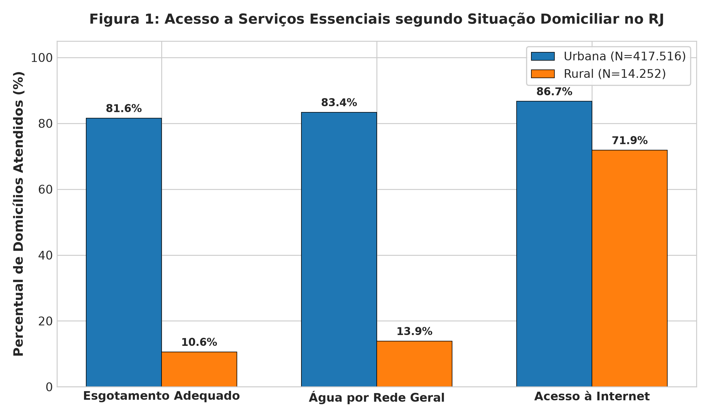
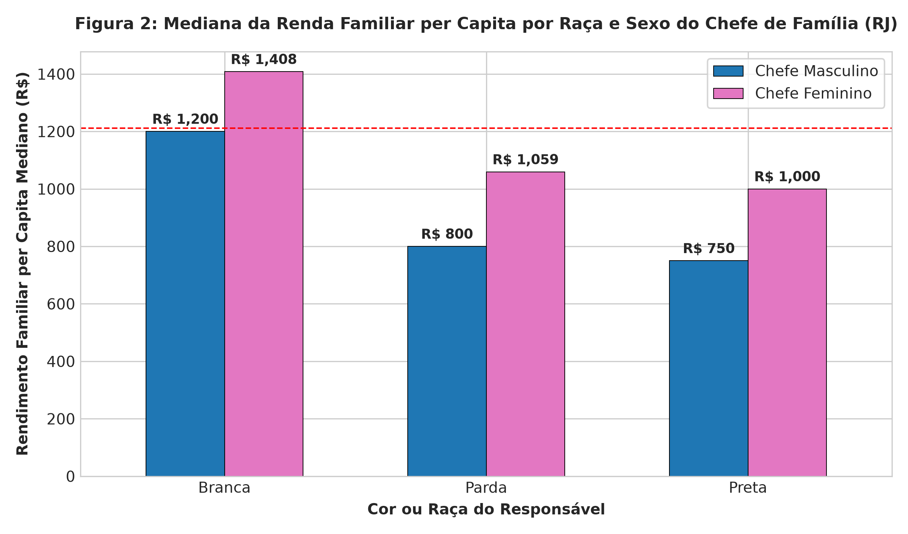
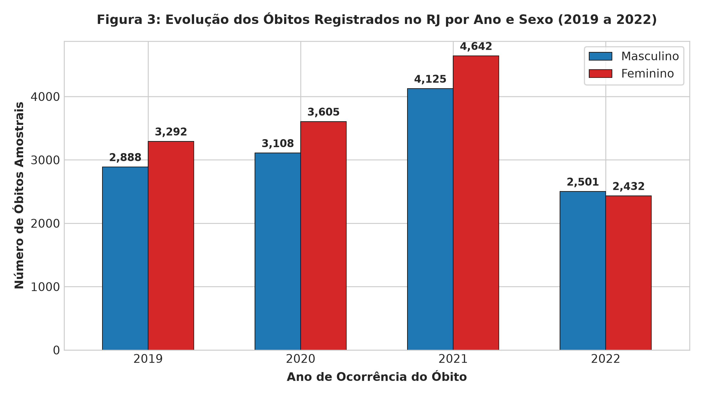

Análise multidimensional dos microdados da amostra do Censo Demográfico 2022 sob os Princípios FAIR
Este projeto apresenta uma investigação detalhada sobre as condições de vida, acesso ao saneamento básico, disparidades de renda na chefia familiar e padrões de mortalidade no Estado do Rio de Janeiro (UF 33), a partir dos microdados oficiais da amostra do Censo Demográfico 2022 disponibilizados pelo Instituto Brasileiro de Geografia e Estatística (IBGE).
Para assegurar a reprodutibilidade e a governança científica do estudo, todo o fluxo de dados foi concebido em conformidade com as diretrizes internacionais da Ciência Aberta e os Princípios FAIR (Findable, Accessible, Interoperable, Reusable), conectando quatro grandes bases relacionais: Domicílios (431.768 registros), Famílias (345.752 registros), Mortalidade (26.594 eventos) e Pessoas (1.129.665 observações).
Percentual de domicílios atendidos por rede geral de esgoto ou fossa séptica ligada à rede.
Comparativo de cobertura de água, esgoto e internet segundo a situação do setor censitário.
Mediana e distribuição de renda por componente familiar em múltiplos do salário mínimo (2022).
Diferenciais de remuneração entre chefes de família homens e mulheres brancas, pretas e pardas.
Taxa de extrema pobreza (renda até 1/4 SM) em famílias monoparentais femininas com filhos.
Evolução anual de óbitos de 2019 a 2022 e sobremortalidade por sexo e faixa etária em 2021.
Os principais arquivos e artefatos de dados desenvolvidos no projeto podem ser acessados diretamente:
O dashboard desenvolvido em Streamlit permite a exploração visual e interativa dos microdados censitários por meio de filtros de situação domiciliar (urbana/rural), faixa de renda per capita, raça/cor, sexo do responsável e ano de ocorrência do óbito.
Os indicadores quantitativos, gráficos analíticos e sínteses textuais são recalculados dinamicamente de acordo com as seleções aplicadas.
Acessar Dashboard StreamlitA análise evidencia uma clivagem dramática no saneamento: enquanto 81,6% dos domicílios urbanos contam com esgotamento sanitário adequado, apenas 10,6% dos domicílios rurais dispõem do serviço no Estado do Rio de Janeiro. A cobertura de água encanada atinge 82,1% no meio urbano contra 49,1% no rural.

| Situação Domiciliar | Total na Amostra | Esgoto Adequado (%) | Água por Rede (%) | Coleta de Lixo (%) | Acesso à Internet (%) |
|---|---|---|---|---|---|
| Urbana | 417.516 | 81,6% | 82,1% | 98,7% | 87,4% |
| Rural | 14.252 | 10,6% | 49,1% | 82,4% | 72,5% |
Mais de 51% dos núcleos familiares fluminenses são chefiados por mulheres. Contudo, lares chefiados por mulheres apresentam mediana de renda per capita de R$ 900,00, comparada a R$ 1.204,00 em lares liderados por homens. Ao interseccionar raça e gênero, responsáveis brancos registram renda per capita mediana de R$ 1.250,00, enquanto mulheres pretas e pardas registram as menores remunerações.

Os registros de óbitos domiciliares de 2019 a 2022 revelam um impacto dramático da pandemia de COVID-19: em 2019 foram contabilizados 6.180 óbitos na amostra; em 2021 esse total saltou para 8.767 óbitos, representando uma elevação abrupta de 41,8%.

Findable (Localizável): Repositório estruturado, identificação formal de autoria e orientador, palavras-chave padronizadas e link perene para os dados do IBGE.
Accessible (Acessível): Código aberto no GitHub, script automatizado de ingestão (download_raw_data.py) e divulgação web via GitHub Pages e Streamlit.
Interoperable (Interoperável): Dicionário de dados normatizado em Markdown e persistência em Apache Parquet colunar e CSV comprimido com tipagem estrita.
Reusable (Reutilizável): Licença MIT aberta, dependências pinadas em requirements.txt e pipeline de ETL executável em comando único.
# Clonar o repositório
git clone https://github.com/ysisbarbosa/censo-demografico-rj-fair.git
cd censo-demografico-rj-fair
# Criar e ativar ambiente virtual
python -m venv .venv
source .venv/bin/activate # No Windows: .venv\Scripts\activate
# Instalar dependências
pip install -r requirements.txt
# Executar pipeline de ETL
python src/etl.py
# Iniciar dashboard interativo Streamlit
streamlit run app.pyO projeto foi desenvolvido para consolidar as competências de Engenharia e Análise de Dados adquiridas ao longo do 6º período de Sistemas de Informação, aplicando técnicas de manipulação com Pandas, visualização estatística com Seaborn e Matplotlib, interatividade com Plotly e Streamlit, sob os rigores de governança e reprodutibilidade científica da Ciência Aberta.